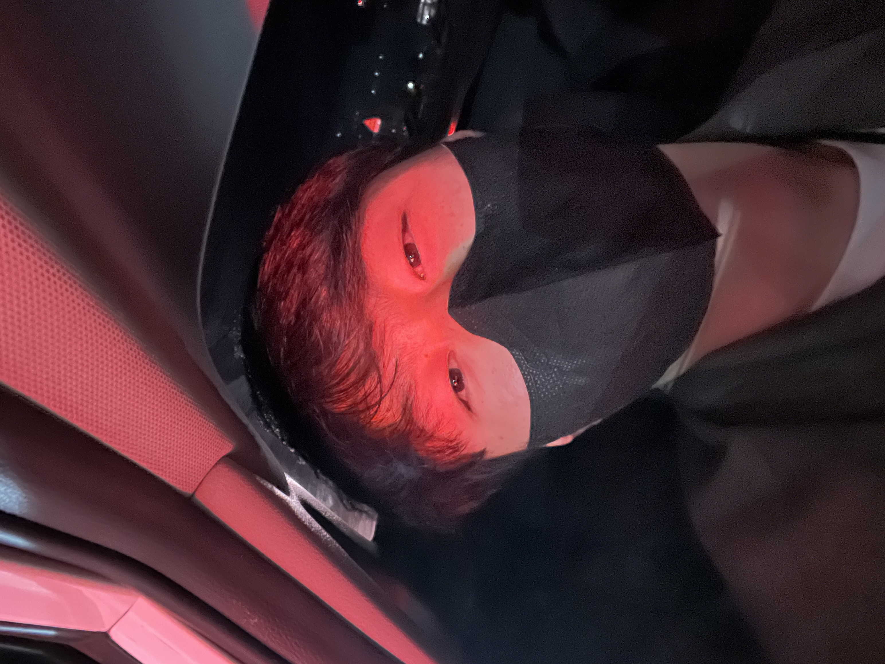

Thank you for your interest.

이름 : 양희준(HuiJun Yang)
별명 : Ace.Y
생년월일 : 2000. 03. 04 (경기도 포천, 대한민국)
Myers-Briggs Type Indicator(MBTI) : Extraversion iNtuition Thinking Judging(ENTJ)
Contact : +82-(0)10-6380-0304, heejun1481@gmail.com,
<약력>
송우초등학교 졸업
동남중학교 졸업
동남고등학교 졸업
Republic Of Korea Marine Corps(ROKMC)
전북대학교(JBNU) 스마트팜학과(Department of Smart Farm) 재학
<좋아하는 것>
수학, 물리, 화학 공부
필라테스(pilates), 헬스(weight training)
동물, 식물 키우기
자전거 타기
<철학>
본질에 집중하자.
아는 만큼 보인다.
단순함이 복잡함을 이긴다.
꾸준함이 진리다. 매일매일 단 하루도 빠지지 않고.